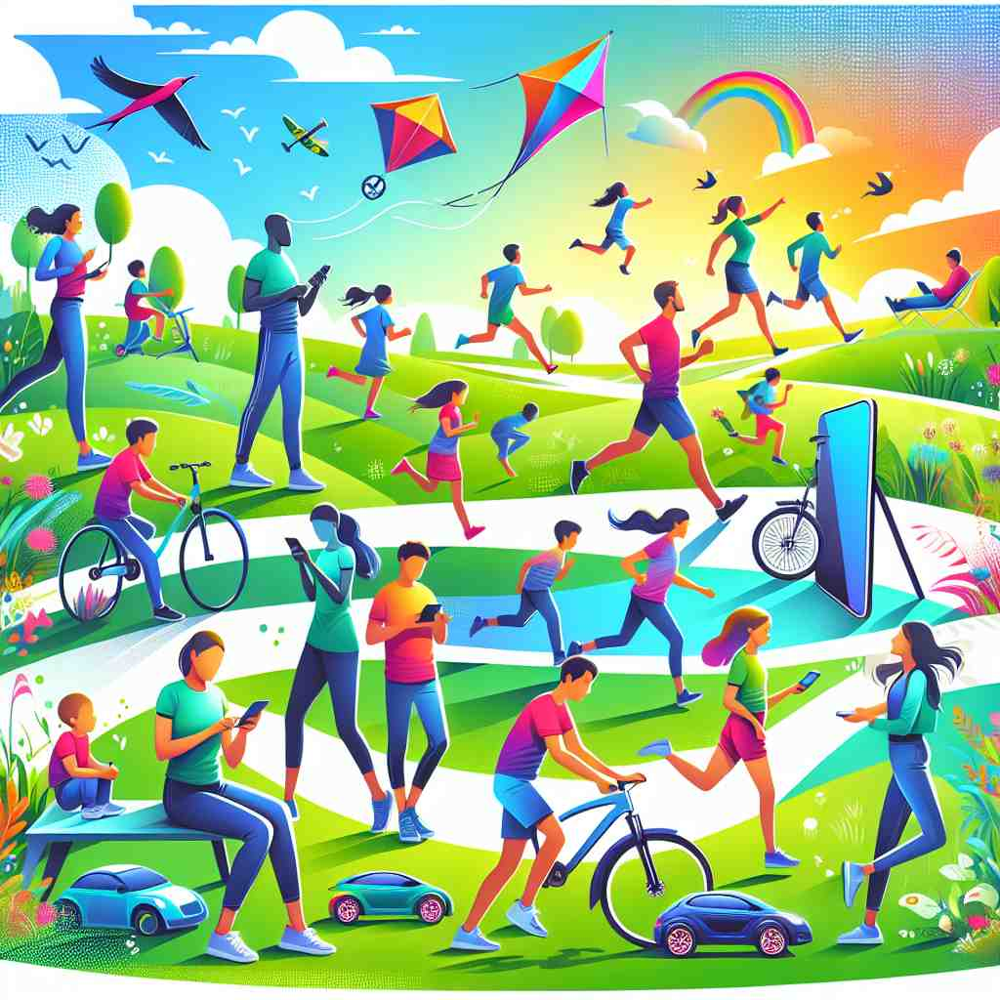

🗝️ adj. able to move or be moved freely or easily
🖼️ 在一个热闹的公园里，小狗兴奋地在草地上奔跑，追逐着飞舞的蝴蝶。它的动作灵活自如，这种自由自在的移动展现了'mobile'这个词的含义。
🔍 想象一个可以自由移动的物体。这种'移动性'是'mobile'的核心含义，无论是实物的移动（如手机、悬挂装饰），还是抽象概念的'移动'（如职业变动、适应性强的劳动力），都源于这个核心概念。记住这个'自由移动'的核心意义，可以帮助你更好地理解和记忆'mobile'的各种用法。

💬 Many people are mobile in the park, enjoying their time.

💬 The city is full of mobile people on scooters and bicycles.
💬 The mobile environment makes it easy for people to move around the city.

💬 Many people enjoy mobile activities in the park.
🌳 由词根 "mob-" 来自拉丁语 "movere"，意为 "移动"。后缀 "-ile" 用来形成形容词，表示具有某种性质的，如 "易于...的"，因此 "mobile" 表示 "可移动的，易于移动的"。
🗝️ adj. relating to mobile phones
🖼️ 在繁忙的咖啡馆，一位年轻人用手机和远在海外的朋友视频聊天。周围的人也都用手机浏览信息或发消息，体现了'mobile'与手机相关的含义。
💬 He works in mobile app development.
❓ 移动电话可以自由移动
🗝️ n. a mobile phone
🖼️ 在一间现代化的办公室里，一位职员坐在桌旁，仔细查看着他的新手机。他的'mobile'不仅是工作工具，也是他保持与外界联系的便捷方式。
💬 I left my mobile at home today.
❓ 移动电话的简称
🗝️ n. a decorative structure that is suspended and moves freely in the air
🖼️ 在一个充满童趣的婴儿房间，五颜六色的悬挂装饰物在轻柔的风吹拂下轻轻晃动。这个移动的装饰物完美地诠释了'mobile'作为悬挂结构的含义。
💬 The baby's crib has a colorful mobile hanging above it.
❓ 可以自由移动的悬挂装置
🗝️ adj. able to change easily or to be easily changed
🖼️ 在一间现代化的开放式办公室，各种家具可以随需求自由调整。员工们通过调整办公桌和椅子的位置，快速改变整个办公环境，这展示了'mobile'作为易于改变的特性。
💬 We need a more mobile workforce that can adapt to new challenges.
❓ 从物理移动扩展到抽象的变化
🗝️ adj. moving from one social level or job to another
🖼️ 在一场隆重的毕业典礼上，一位学生走上领奖台，获得了梦寐以求的学位。她满怀信心地准备从学校进入职场，如此社会等级的转变充分体现了'mobile'在社会流动中的含义。
💬 The company promotes a mobile career path for its employees.
❓ 在社会地位或工作中的移动